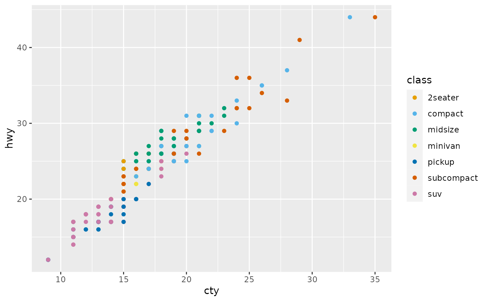
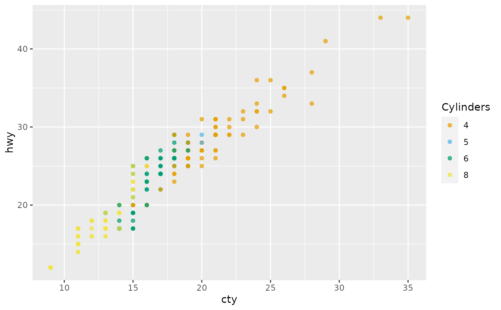
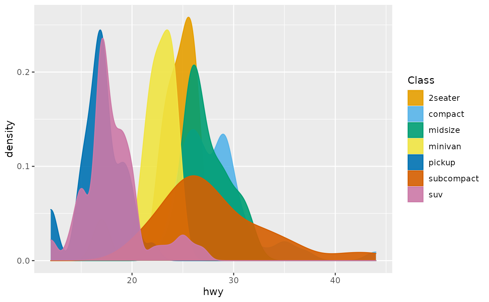

Discrete scales for the colorblind-friendly Okabe-Ito palette, including
color, fill, and edge_colour. See palette_okabe_ito for
details.
scale_okabe_ito(aesthetics, order = 1:9, alpha = 1, ...)
scale_colour_okabe_ito(aesthetics = "colour", order = 1:9, alpha = NULL, ...)
scale_color_okabe_ito(aesthetics = "colour", order = 1:9, alpha = NULL, ...)
scale_fill_okabe_ito(aesthetics = "fill", order = 1:9, alpha = NULL, ...)
scale_edge_colour_okabe_ito(
aesthetics = "edge_colour",
order = 1:9,
alpha = NULL,
...
)
scale_edge_color_okabe_ito(
aesthetics = "edge_colour",
order = 1:9,
alpha = NULL,
...
)The names of the aesthetics that this scale works with.
A numeric vector, the order of the colors, or a character vector
of color names, of: "black", "orange", "skyblue", "bluishgreen", "yellow",
"blue", "vermillion", "reddishpurple", "gray". If alpha is not NULL,
you must use an integer vector since the colors are not returned with
names.
an alpha-transparency level in the range [0,1] (0 means transparent and 1 means opaque).
Additonal arguments passed to ggplot2::discrete_scale()
A ggplot or ggraph scale
library(ggplot2)
ggplot(mpg, aes(cty, hwy, color = class)) +
geom_point() +
scale_color_okabe_ito()

ggplot(mpg, aes(cty, hwy, color = factor(cyl))) +
geom_point(alpha = 0.7) +
scale_color_okabe_ito(name = "Cylinders", alpha = .9)

ggplot(mpg, aes(hwy, color = class, fill = class)) +
geom_density() +
scale_fill_okabe_ito(name = "Class", alpha = .9) +
scale_color_okabe_ito(name = "Class")
